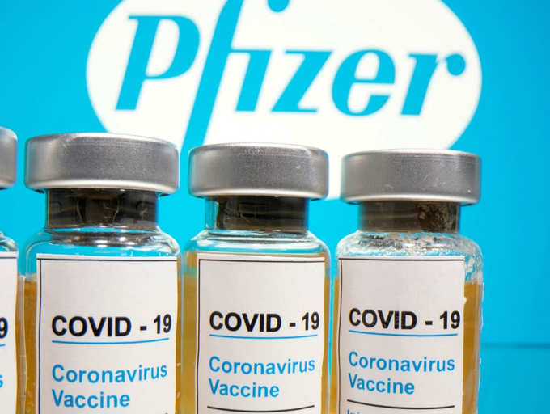

what is Vaccine ?
A vaccine is a biological preparation that provides active acquired immunity to a particular infectious disease.
A vaccine typically contains an agent that resembles a
disease-causing microorganism and is often made from weakened or killed forms of the microbe,
its toxins, or one of its surface proteins

Is there vaccine for corona virus ?
Yes there are now several vaccines that are in use. The first mass vaccination programme started in early December 2020 and the number of vaccination doses administered is updated on a daily basis here. At least 13 different vaccines (across 4 platforms) have been administered. The Pfizer/BioNtech Comirnaty vaccine was listed for WHO Emergency Use Listing (EUL) on 31 December 2020. The SII/Covishield and AstraZeneca/AZD1222 vaccines (developed by AstraZeneca/Oxford and manufactured by the State Institute of India and SK Bio respectively) were given EUL on 16 February. The Janssen/Ad26.COV 2.S developed by Johnson & Johnson, was listed for EUL on 12 March 2021. The Moderna COVID-19 vaccine (mRNA 1273) was listed for EUL on 30 April 2021 and the Sinopharm COVID-19 vaccine was listed for EUL on 7 May 2021. The Sinopharm vaccine is produced by Beijing Bio-Institute of Biological Products Co Ltd, subsidiary of China National Biotec Group (CNBG). For further information, see here. WHO is on track to EUL other vaccine products through June. The products and progress in regulatory review by WHO is provided by WHO and updated regularly. The document is provided here. Once vaccines are demonstrated to be safe and efficacious, they must be authorized by national regulators, manufactured to exacting standards, and distributed. WHO is working with partners around the world to help coordinate key steps in this process, including to facilitate equitable access to safe and effective COVID-19 vaccines for the billions of people who will need them. More information about COVID-19 vaccine development is available here.
What causes a virus to change to a new variant?
When a virus is widely circulating in a population and causing many infections, the likelihood of the virus mutating increases. The more opportunities a virus has to spread, the more it replicates – and the more opportunities it has to undergo changes.